Проект, информационная база, приложение и рабочая область в 1C:EDT
Объяснение для новичка: что это такое, как связано между собой и когда что использовать
Коротко
Если запомнить только одно:
- Проект — какая программа: справочники, документы, формы, код. Хранится как обычные файлы на диске.
- Информационная база — где программа работает и где лежат её данные.
- Приложение — связка «этот проект запускать на этой базе».
- Рабочая область — шкаф, в котором лежат проекты и настройки EDT.
1. Как было в конфигураторе и что изменилось в EDT
В конфигураторе конфигурация живёт внутри базы, в одном файле вместе с данными. Одна база — одна конфигурация, и правишь ты её прямо в базе. Удалил базу — пропала и конфигурация.
В EDT это разделено на две части:
- конфигурация лежит отдельно, в проекте, в виде папки с файлами;
- база хранит только данные и служит местом, где программа запускается.
Связывает их приложение: это запись о том, на какой базе запускать какой проект.
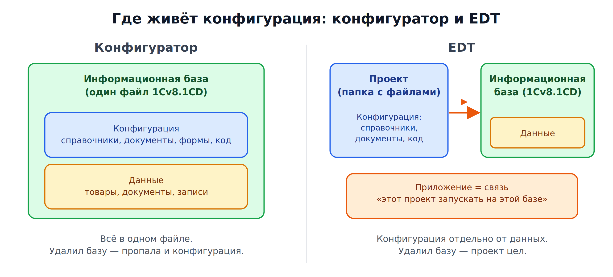
2. Аналогия: чертёж, дом и шкаф
| Понятие EDT | Аналогия | Что это в 1С |
|---|---|---|
| Проект | Чертёж дома | Конфигурация: объекты, формы, код |
| Информационная база | Дом, построенный по чертежу | Данные: товары, документы, записи |
| Приложение | Табличка «по этому чертежу строим этот дом» | Связь проекта с конкретной базой |
| Рабочая область | Шкаф, где лежат чертежи | Папка с проектами и настройками EDT |
В конфигураторе чертёж нарисован прямо на стенах дома: хочешь что-то поменять — меняешь в доме. Дом сгорел — сгорел и чертёж.
В EDT чертёж лежит в папке отдельно. Дом строится по нему. Если дом сгорел, чертёж цел, и новый дом строится за минуту. А по одному чертежу можно построить хоть три дома.
3. Четыре понятия подробно
3.1. Проект
Что это: твоя конфигурация в виде файлов. Всё, что ты создаёшь в EDT (подсистемы, справочники, документы, реквизиты, формы, модули, макеты), лежит в проекте.
Где видно в EDT: панель «Навигатор» слева. Корневой элемент дерева — это и есть проект.
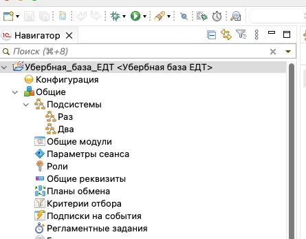
Где лежит на диске: в папке рабочей области, в отдельной папке с именем проекта. Узнать точный путь можно так: правой кнопкой по проекту в навигаторе → «Свойства» → раздел «Ресурс» → строка «Расположение».
Что внутри папки проекта:
src— сама конфигурация. Каждый объект лежит в своей папке:src/Subsystems/Раз,src/Catalogs/Товарыи так далее;DT-INF— служебные файлы проекта для EDT.
Виды проектов:
- проект конфигурации — основная программа, его ты создаёшь чаще всего;
- проект расширения — доработка типовой конфигурации без её изменения;
- проект внешних отчётов и обработок — отдельные файлы, которые подключаются к любой базе.
3.2. Информационная база
Что это: место, где программа работает и хранит данные. Всё, что ты вводишь в режиме 1С:Предприятия (товары, документы, записи), хранится в базе.
Где видно в EDT: панель «Информационные базы». Если рядом с базой в угловых скобках написано имя проекта, например <Убербная_база_ЕДТ>, значит, база привязана к этому проекту.
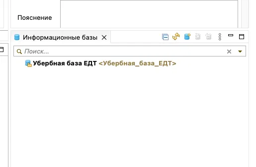
Где лежит на диске: в папке с базами, например /Users/<ты>/1c_Bases/. Каждая файловая база — это отдельная папка с файлом 1Cv8.1CD внутри.
Важное правило: каждую базу создавай в своей отдельной подпапке, никогда в корне папки с базами. Иначе при удалении одной базы «вместе с содержимым» удалятся все остальные.
На Маке используй файловую базу. Вариант «локальный автономный сервер» на Маке недоступен.
3.3. Приложение
Что это: просто связь, запись вида «проект Убербная_база_ЕДТ запускай на базе Убербная база ЕДТ». Ни кода, ни данных в приложении нет.
Где видно в EDT: панель «Приложения». Выдели проект в навигаторе, и в панели появится список его приложений.
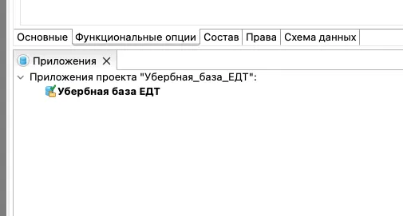
Зачем нужно: когда ты нажимаешь ▶, EDT по приложению понимает, какую базу обновить и запустить. У одного проекта может быть несколько приложений, то есть несколько баз.
Создаётся при первом запуске проекта, когда EDT спрашивает, на какой базе запускать. Дальше EDT его запоминает.
3.4. Рабочая область
Что это: шкаф, в котором лежат несколько проектов и настройки EDT: тема, расположение окон, связи проектов с базами. EDT за один раз открывает только одну рабочую область.
Где видно: в заголовке окна EDT. Например, в заголовке «Учебный в EDT — Убербная_база_ЕДТ → Общие → Подсистемы»:
- «Учебный в EDT» — рабочая область;
- «Убербная_база_ЕДТ» — проект внутри неё.
Путаница с EDT Start: в списке EDT Start рабочие области называются «проектами». Каждая строка там — это отдельный шкаф, а не проект.
Где лежит на диске: путь можно открыть из EDT Start, синей иконкой папки рядом с названием. Внутри лежат папки проектов и служебная папка .metadata с настройками EDT.
Смена рабочей области — закрыть один шкаф и открыть другой. EDT перезапустится и покажет проекты из другой папки. Это можно сделать через пункт смены рабочей области в меню «Файл» или выбрать другую строку в EDT Start.
Когда нужна вторая рабочая область:
- чтобы не смешивать разное: например, «Учёба» для учебных проектов и «Работа» для клиентских конфигураций;
- чтобы EDT ела меньше памяти: в одной области меньше проектов.
Для учёбы хватит одной рабочей области. Под типовую (ЗГУ) делаем вторую — как и зачем, в разделе 9.
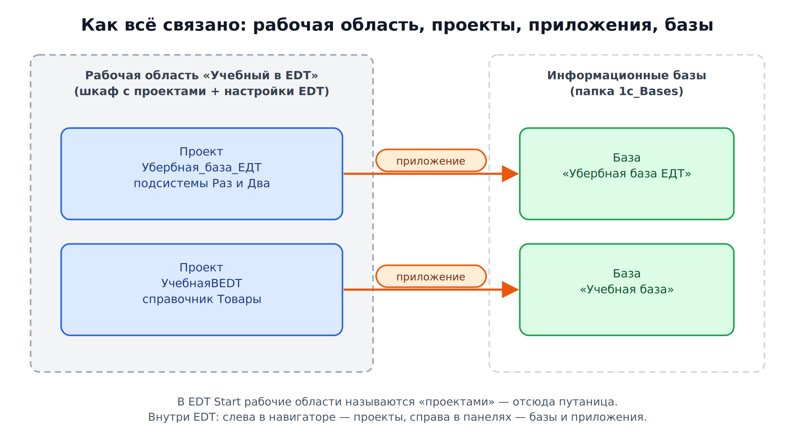
4. Что происходит, когда ты нажимаешь ▶
- Ты нажимаешь ▶, а в навигаторе выделен проект.
- EDT смотрит в приложение: на какой базе запускать.
- EDT обновляет базу: переносит в неё всё, что ты поменял в проекте.
- Запускается 1С:Предприятие, и ты видишь результат.
Именно поэтому после создания подсистем «Раз» и «Два» в 1С сразу появились одноимённые разделы.
Главное правило: конфигурацию меняешь только в проекте, то есть в EDT. База сама получит изменения при следующем запуске. Править ту же базу параллельно в конфигураторе нельзя: изменения разойдутся.
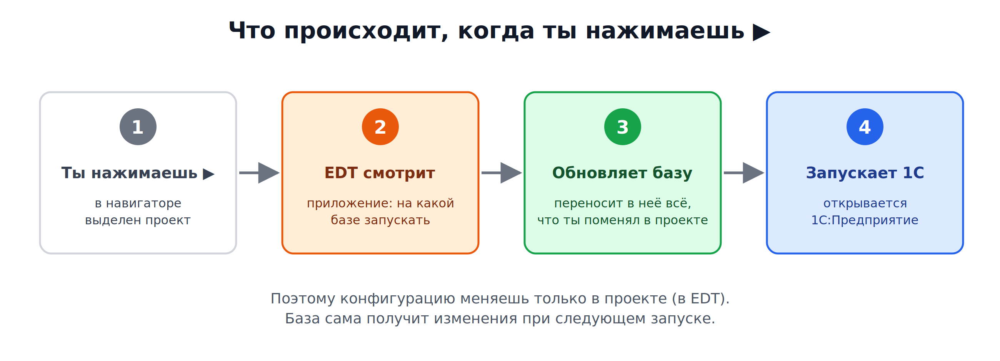
5. Импорт и запуск — в разные стороны
Эти два действия легко перепутать:
- Импорт — из базы в проект. Его делают, когда уже есть база с готовой конфигурацией (как «Дошкольное питание») и из неё нужно сделать проект. Обычно один раз, в самом начале.
- Запуск (обновление базы) — из проекта в базу. Происходит каждый раз, когда ты нажимаешь ▶.
Поэтому фраза «создал базу и импортировал в неё проект» неверна. Правильно: «создал базу и запустил на ней проект».
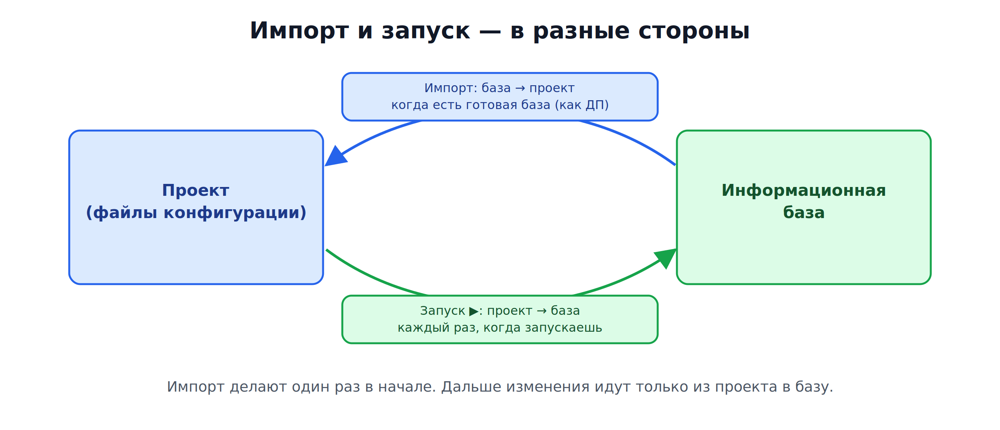
6. Где всё лежит на диске (Мак)
/Applications/1C/1CE/ ← сама программа EDT (просто инструмент)
/opt/1cv8/8.3.27.2342/ ← платформа 1С:Предприятие
<папка рабочей области>/ ← рабочая область («шкаф»)
├── .metadata/ ← настройки EDT
└── Убербная_база_ЕДТ/ ← проект («чертёж»)
├── DT-INF/ ← служебные файлы EDT
└── src/ ← конфигурация
├── Configuration/
└── Subsystems/
├── Раз/
└── Два/
/Users/<ты>/1c_Bases/ ← папка с базами
└── Убербная база ЕДТ/ ← база («дом»), своя подпапка
└── 1Cv8.1CD ← данные
Если удалить программу EDT, проекты и базы останутся. Если удалить базу, проект останется. Если удалить проект, базы останутся, но конфигурацию придётся вытаскивать из базы импортом.
7. Типовые ситуации: что делать
| Ситуация | Что делать |
|---|---|
| Начинаю учебный проект с нуля | Новый проект → первый запуск ▶ → новая файловая база в отдельной подпапке |
| Хочу проверить на чистой базе, не трогая учебную | Создать ещё одну базу и ещё одно приложение у того же проекта |
| База удалилась или сломалась | Проект цел: создать новую базу и новое приложение, запустить |
| Есть база с готовой конфигурацией (как ДП) | Импорт: создать из неё новый проект |
| Хочу отделить учёбу от работы | Завести вторую рабочую область |
| EDT тормозит, график памяти жёлтый | Закрыть проекты, с которыми сейчас не работаешь: правой кнопкой → «Закрыть проект» |
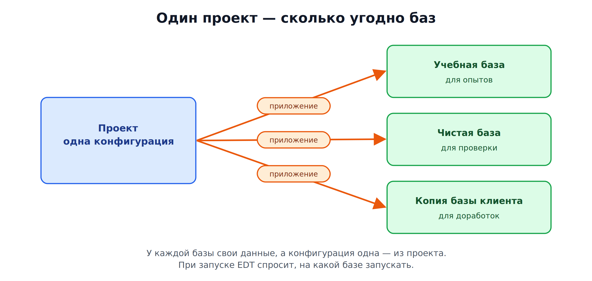
8. Шпаргалка: новый проект и первый запуск
- Рабочая область. Открой EDT Start и запусти нужную рабочую область (или создай новую).
- Проект. «Файл → Создать → Проект конфигурации». Имя латиницей или без пробелов, версия платформы — 8.3.27 (та, что установлена).
- Объект. Добавь что-нибудь, например подсистему или справочник.
- Запуск. Выдели проект в навигаторе и нажми ▶.
- Приложение. В окне «Создать новое приложение» выбери первый вариант: «на файловой, клиент-серверной или удалённой информационной базе».
- База. «Создать новую информационную базу» → файловая, отдельная подпапка, платформа 8.3.27.
- Клиент. В «Запуск как» выбери Тонкий клиент.
В следующий раз ▶ сразу обновит базу и запустит 1С: связь уже настроена.
9. Новая рабочая область и перенос настроек
Зачем отдельная рабочая область
Рабочая область — папка, в которой EDT держит проекты и свои настройки (раздел 3.4). В задачах с типовой конфигурацией (ЗГУ, БГУ) её делают отдельной.
| Всё в одной области | Отдельная область под типовую | |
|---|---|---|
| Скорость | EDT постоянно проверяет и индексирует тысячи объектов типовой, учебный проект тормозит | Учебная область остаётся быстрой |
| Порядок | Учебные и рабочие проекты вперемешку | Типовая и всё, что к ней относится (внешние отчёты, расширения), — вместе |
| Ошибки | Легко создать внешний отчёт не с тем базовым проектом | Базовый проект в области один |
У нас две области: edu — для Uchebnaya, zgu — для демо-базы ЗГУ.
Карта шагов
| Шаг | Что делаем | Зачем |
|---|---|---|
| 1 | Создаём область zgu в EDT Start | Отдельное рабочее место под ЗГУ |
| 2 | Открываем новую область | Видим, что настройки в ней — по умолчанию, и понимаем почему |
| 3 | Выгружаем настройки из edu | Сохраняем тему и остальное в один файл |
| 4 | Загружаем их в zgu | Получаем то же рабочее место, что в edu |
| 5 | Исправляем имя области в заголовке | Вместе с настройками переехало и чужое имя |
Шаг 1. Создать рабочую область в EDT Start
Зачем. Новая область — новое пустое рабочее место для ЗГУ, отдельно от учебного проекта.
Что получим: в EDT Start вторая строка zgu, а на диске папка ~/1C/workspaces/zgu.
Что делаем. В EDT Start нажать «Новый проект». Имя zgu, расположение ~/1C/workspaces/zgu, версия EDT та же. «Новый проект» здесь создаёт именно рабочую область — EDT Start называет области «проектами» (раздел 3.4).
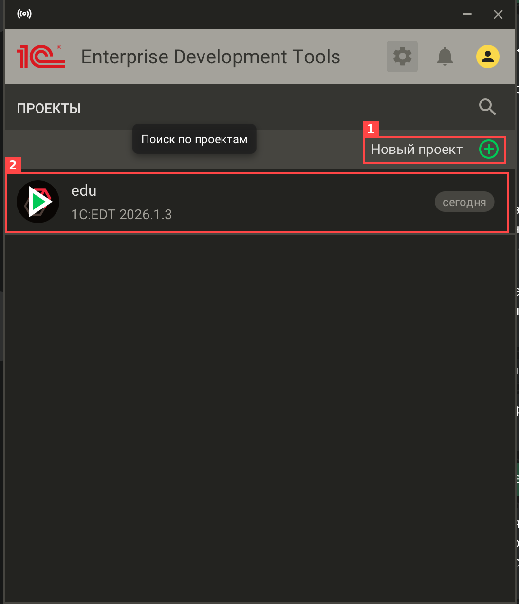
| № | Что это |
|---|---|
| 1 | «Новый проект» — в EDT Start это создание рабочей области |
| 2 | Существующая область edu и версия EDT, в которой она открывается |
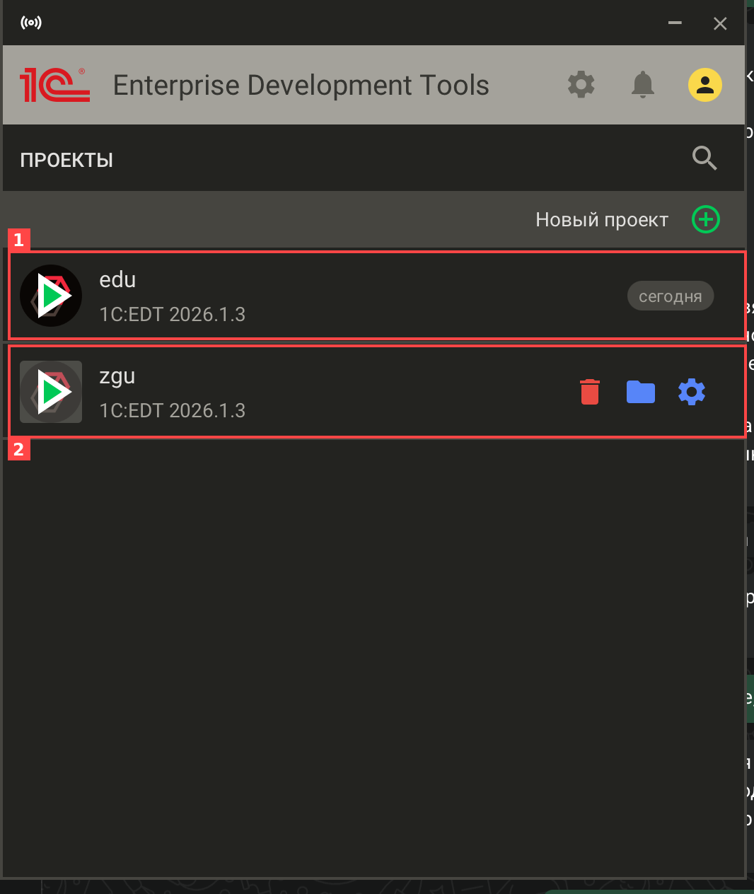
| № | Что это |
|---|---|
| 1 | Старая область edu |
| 2 | Новая область zgu. Справа — удалить, открыть папку, настройки |
Шаг 2. Новая область открывается с настройками по умолчанию
Зачем. Понять, почему тёмная тема и прочие настройки «пропали».
Что получим: объяснение: настройки не пропали, они остались в edu.
Что делаем. Запустить zgu зелёным треугольником.
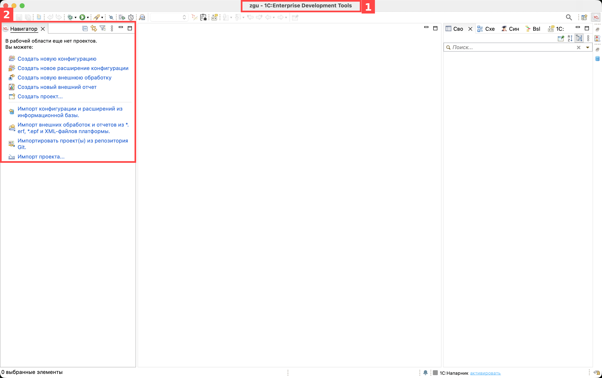
| № | Что это |
|---|---|
| 1 | Заголовок окна — имя рабочей области zgu |
| 2 | Навигатор пустой, тема светлая — настройки по умолчанию |
Почему так. EDT построен на Eclipse, а в Eclipse каждая рабочая область хранит свои настройки в своей папке .metadata. Новая область про настройки edu ничего не знает. Перенести их можно через экспорт и импорт параметров.
Шаг 3. Выгрузить настройки из старой области
Зачем. Сохранить все настройки edu в один файл, чтобы загрузить их в другую область.
Что получим: файл ~/1C/edt-settings.epf.
Что делаем. Открыть область edu → «Файл» → «Экспорт…» → «Общие» → «Параметры» → «Далее». Выгружаем именно из edu, потому что настройки лежат там.
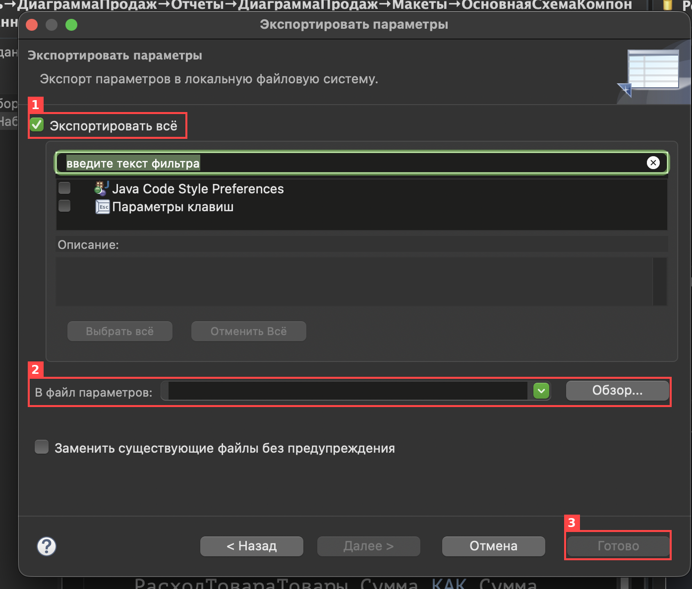
| № | Что это |
|---|---|
| 1 | «Экспортировать всё» — все настройки сразу, тема тоже. Пункты в списке ниже отмечать не нужно |
| 2 | «В файл параметров» → «Обзор…» → папка ~/1C, имя edt-settings.epf |
| 3 | «Готово» |
Файл .epf здесь — не внешняя обработка 1С, а файл настроек Eclipse. Расширения просто совпали.
Шаг 4. Загрузить настройки в новую область
Зачем. Получить в zgu то же рабочее место, что в edu.
Что получим: после перезапуска — тёмная тема и остальные настройки.
Что делаем. Открыть область zgu → «Файл» → «Импорт…» → «Общие» → «Параметры» → «Далее».
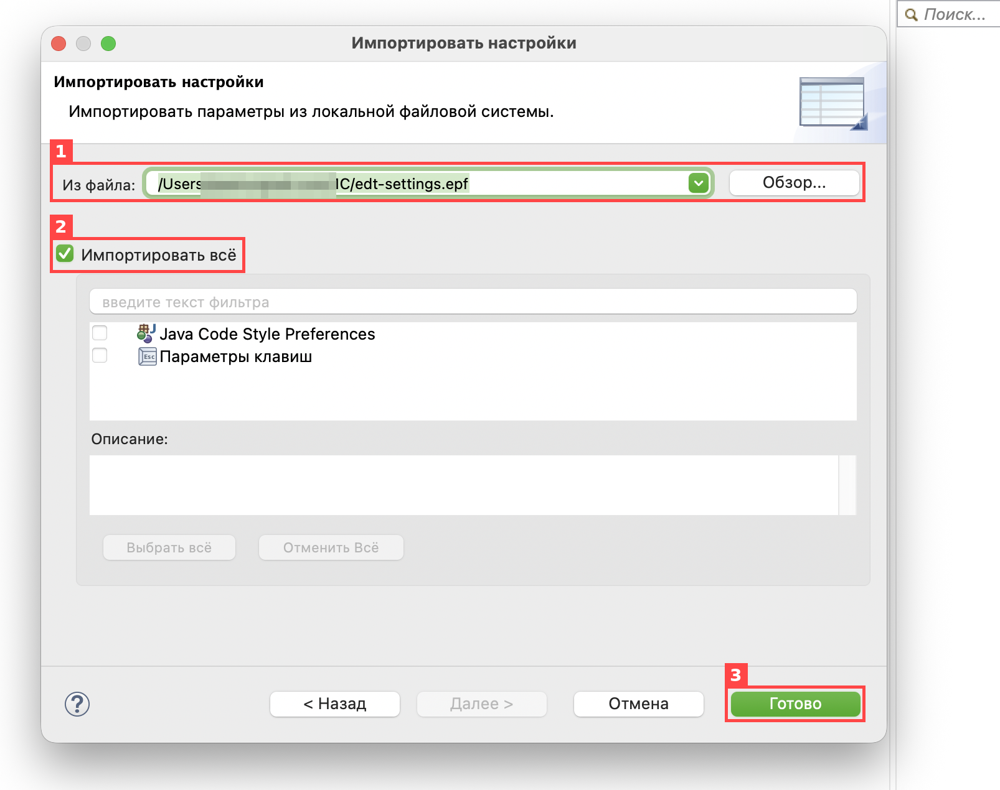
| № | Что это |
|---|---|
| 1 | «Из файла» — ~/1C/edt-settings.epf из шага 3 |
| 2 | «Импортировать всё» |
| 3 | «Готово». EDT попросит перезапуск — соглашаемся: часть настроек, например тема, применяется только при запуске |
Шаг 5. Проверить имя области в заголовке
Зачем. Вместе с настройками переносится и имя рабочей области, которое EDT пишет в заголовке окна. После импорта zgu выглядит как edu.
Что получим: в заголовке снова zgu.
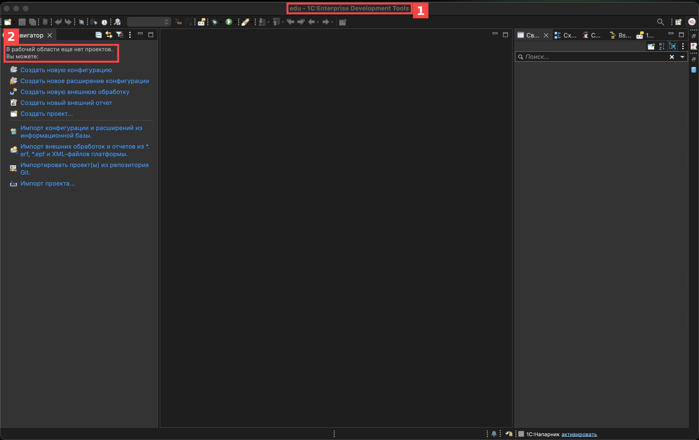
| № | Что это |
|---|---|
| 1 | В заголовке edu, хотя открыта область zgu |
| 2 | Навигатор пустой — значит, это новая область: в edu лежат учебные проекты |
Что делаем. Меню EDT → «Настройки…» (Cmd+,) → «Общие» → «Рабочая область» → поле «Имя рабочей области (отображается в заголовке окна)» → zgu → «Применить и закрыть».
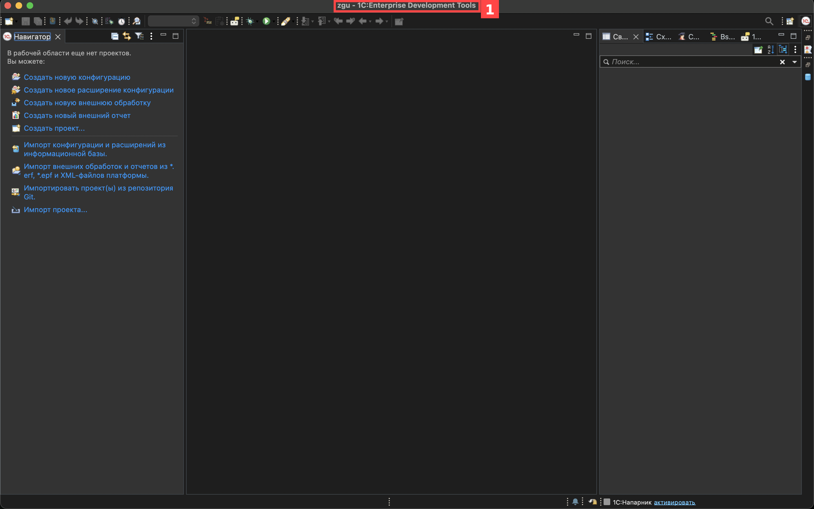
| № | Что это |
|---|---|
| 1 | В заголовке zgu |
Где что лежит
| Что | Где |
|---|---|
| Настройки рабочей области | <папка области>/.metadata — вручную не трогать |
| Файл выгруженных настроек | ~/1C/edt-settings.epf — пригодится для каждой новой области |
| Переключиться между областями | EDT Start или «Файл» → «Сменить рабочую область» |
10. Частые ошибки
| Что видишь | Почему | Что делать |
|---|---|---|
| «Должна быть выбрана версия автономного сервера», список версий пуст | Выбран вариант «локальный автономный сервер», на Маке его нет | Отмена → выбрать первый вариант, файловую базу |
| «Нет зарегистрированных в EDT установок 1С:Предприятие 8.5.1» | Версия в проекте или в настройках базы не совпадает с установленной | Поставить 8.3.27 в мастере импорта или в настройках базы |
| Нажимаешь ▶ — ничего не происходит | Не выделен проект, нет приложения или идёт сборка | Выделить проект, проверить панель «Приложения», дождаться окончания процентов внизу |
| После удаления одной базы пропали все | База была создана в корне папки с базами | Создавать каждую базу в своей подпапке, включить Time Machine |
| Изменения «пропадают» или конфликтуют | Конфигурацию правили и в EDT, и в конфигураторе | Менять конфигурацию только в EDT |
Ошибка экспорта про AddressingAttribute на ДП |
Внутренняя ошибка EDT на сторонней конфигурации | Не тратить время, учиться на своём проекте |
После импорта настроек в заголовке окна имя другой рабочей области: edu, хотя открыта новая. Легко решить, что открыта не та область, или начать работать не в той |
Имя рабочей области — тоже настройка, и «Экспортировать всё» переносит его вместе с темой | «Настройки…» → «Общие» → «Рабочая область» → «Имя рабочей области» → правильное имя. Проверять область по навигатору (какие в ней проекты), а не только по заголовку (раздел 9, шаг 5) |
11. Словарь
- Конфигурация — описание программы: какие в ней объекты, формы и код.
- Проект — конфигурация в виде файлов на диске, с которой работает EDT.
- Информационная база — место, где программа работает и хранит данные.
- Файловая база — база в виде папки с файлом
1Cv8.1CDна твоём компьютере. - Приложение — связь проекта с конкретной базой.
- Рабочая область — папка, где лежат проекты и настройки EDT.
- Навигатор — панель слева в EDT с деревом проекта.
- Импорт — создание проекта из существующей базы.
- Обновление базы — перенос изменений из проекта в базу, происходит при запуске ▶.
- EDT Start (стартер EDT) — программа запуска EDT, в ней рабочие области называются «проектами».
- Параметры (настройки) EDT — тема, шрифты, вид окон, настройки редактора. Хранятся в служебной папке
.metadataвнутри каждой рабочей области. - Файл
.epfнастроек — файл с выгруженными настройками EDT. Это не внешняя обработка 1С, а формат Eclipse (Eclipse Preference File) — расширения просто совпадают. - Платформа — сама 1С:Предприятие (у тебя 8.3.27), которая запускает базы.
Проверь себя
- Ты удалил базу. Что стало с проектом?
- Чем импорт отличается от запуска?
- Что хранится в приложении?
- Почему базу нельзя создавать в корне папки с базами?
- Ты поменял конфигурацию в EDT. Что нужно сделать, чтобы изменения появились в базе?
Ответы:
- Ничего, проект цел: он хранится отдельно. Создаёшь новую базу и запускаешь на ней проект.
- Импорт переносит конфигурацию из базы в проект, а запуск — из проекта в базу.
- Только связь: какой проект на какой базе запускать. Ни кода, ни данных.
- При удалении такой базы «вместе с содержимым» удалится вся папка, а с ней и все остальные базы.
- Просто нажать ▶: EDT сама обновит базу.